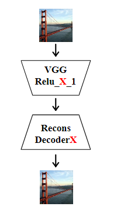

特征 Whiten-Color 转换
Universal Style Transfer via Feature Transforms
LI Y, CHEN F, YANG J, et al. Universal Style Transfer via Feature Transforms[J]. Neural Information Processing Systems,Neural Information Processing Systems, 2017.
Universal style transfer aims to transfer arbitrary visual styles to content images. Existing feed-forward based methods, while enjoying the inference efficiency, are mainly limited by inability of generalizing to unseen styles or compromised visual quality. In this paper, we present a simple yet effective method that tackles these limitations without training on any pre-defined styles. The key ingredient of our method is a pair of feature transforms, whitening and coloring, that are embedded to an image reconstruction network. The whitening and coloring transforms reflect direct matching of feature covariance of the content image to a given style image, which shares similar spirits with the optimization of Gram matrix based cost in neural style transfer. We demonstrate the effectiveness of our algorithm by generating high-quality stylized images with comparisons to a number of recent methods. We also analyze our method by visualizing the whitened features and synthesizing textures by simple feature coloring.
摘要：通用样式转移的目的是将任意的视觉风格转移到内容图像中。现有的基于前馈的方法虽然具有较高的推理效率，但主要存在不能泛化到未知样式或视觉质量较差的问题。在本文中，我们提出了一个简单而有效的方法来解决这些限制，而不需要训练任何预定义的样式。方法的关键是嵌入到图像重建网络中的一对特征变换，即增白和着色。增白和着色变换反映了内容图像的特征协方差与给定风格图像的直接匹配，这与神经风格迁移中基于 Gram 矩阵的代价优化具有相似的精神。我们通过生成高质量的风格化图像来证明我们算法的有效性，并与许多最近的方法进行了比较。我们还通过可视化白化特征和通过简单的特征着色合成纹理来分析我们的方法。
编码器-解码器结构
使用 VGG-19 作为编码器，对其进行微调；并训练解码器网络，只需将 VGG 特征反转到原始图像。

- 解码器设计成与 VGG-19 网络对称，使用最近邻上采样层用于扩大特征图。
使用像素重建损失和特征损失对输入图像进行重建：
$$ L = \vert\vert I_o - I_i \vert\vert _2^2 + \lambda\vert\vert \Phi(I_o) - \Phi(I_i) \vert\vert\tag{1} $$其中，$I_i$ 是输入图像，$I_o$ 是重建输出图像，$\Phi$ 是 VGG 编码器提取 Relu_X_1 的特征，$\lambda$ 是权重系数。
Whitening 和 Coloring
给定内容图像 $I_c$ 和风格图像 $I_s$，首先提取向量化后的 VGG 特征 $f_c \in \mathfrak{R}^{C\times H_c W_c}$ 和 $f_s \in \mathfrak{R}^{C\times H_s W_s}$。接下来提出一个白化和着色变换去调整 $f_c$ 相对于 $f_s$ 的统计。即 WCT 的目标是直接变换 $f_c$ 去匹配 $f_s$ 的协方差矩阵。
WCT 过程包括 Whitening（白化）和 Coloring（着色）变换。
白化变换
首先，$f_c$ 通过减去其均值向量使得中心化：
$$ f_c \leftarrow f_c - \mu_c\tag{2} $$然后对 $f_c$ 进行式 (3) 的线性变换，得到 $\hat{f}_c$，使得特征映射是不相关的（$\hat{f}_c \hat{f}_c^\top=I$）。协方差矩阵 $f_c f_c^\top \in \mathfrak{R}^{C\times C}$，衡量内容特征各通道之间的相关性（即风格信息），且满足$f_c f_c^\top = E_c D_c E_c^\top$
$$ \hat{f}_c = E_c D_c^{-\frac {1}{2}} E_c^\top f_c\tag{3} $$- $D_c\in \mathfrak{R}^{C\times C}$，对角特征值矩阵：对角线元素为协方差矩阵的特征值，反映各主方向的方差强度。
- $E_c\in \mathfrak{R}^{C\times C}$，正交特征向量矩阵：每一列是协方差矩阵的特征向量，构成正交基，表示特征空间的主方向。
- $D_c^{-\frac {1}{2}}$，特征值缩放：对特征值取平方根的倒数，使各方向的方差归一化为 1。
- $\hat{f}_c \in \mathfrak{R}^{C\times H_c W_c}$，白化后的特征：满足 $\hat{f}_c \hat{f}_c^\top = I$（单位矩阵），即各通道不相关且方差为1。
公式 (3) 可以理解为：
- 通过 $E_c^\top f_c$ 将原始特征投影到协方差矩阵的特征向量空间，消除通道间的相关性。
- 接着 $D_c^{-\frac {1}{2}} E_c^\top f_c$ 对投影后的特征进行缩放，使每个方向的方差变为 1。
- 最后 $E_c D_c^{-\frac {1}{2}} E_c^\top f_c$ 将归一化后的特征逆投影回原始空间，得到白化特征 $\hat{f}_c$。
白化的核心意义：
- 剥离风格信息：通过消除特征通道间的相关性（协方差），去除内容特征中的风格统计特性。
- 保留内容结构：白化后的特征仍保留全局内容结构（如图2中的桥梁、人脸轮廓），但细节纹理（如梵高笔触）被移除。
- 为着色变换做准备：白化后的特征协方差为 $I$，后续通过着色变换注入目标风格的协方差，实现风格迁移。
着色变换
同样，$f_s$ 通过减去其均值向量使得中心化。然后进行着色变换，基本上是白化的逆过程。
对 $\hat{f}_c$ 进行式 (4) 的线性变换，得到 $\hat{f}_{cs}$，使得特征映射之间存在所需的相关性（$\hat{f}_{cs} {\hat{f}_{cs}}^\top=f_s f_s^\top$）。协方差矩阵 $f_s f_s^\top \in \mathfrak{R}^{C\times C}$，衡量风格图像各通道间的相关性，满足 $f_s f_s^\top = E_s D_s E_s^\top$
$$ \hat{f}_{cs} = E_s D_s^{\frac {1}{2}} E_s^\top \hat{f}_c\tag{4} $$- $E_s \in \mathfrak{R}^{C\times C}$，正交特征向量矩阵：协方差矩阵的特征向量，表示风格特征空间的主方向（如纹理方向、色彩分布模式）。
- $D_s \in \mathfrak{R}^{C\times C}$，对角特征值矩阵：对角线元素为协方差矩阵的特征值，反映各主方向的方差强度（如风格纹理的能量分布）。
- $D_s^{-\frac {1}{2}}$，特征值缩放：对特征值取平方根，恢复风格特征的原始方差强度。
- $\hat{f}_{cs} \in \mathfrak{R}^{C\times H_c W_c}$，着色后的特征：变换后的特征满足 $\hat{f}_{cs} {\hat{f}_{cs}}^\top=f_s f_s^\top$，即协方差与风格特征完全一致，且均值通过重新中心化对齐。
公式 (4) 可以理解为：
- $E_s^\top \hat{f}_c$ 将白化后的内容特征投影到风格协方差矩阵的特征向量空间中。
- $D_s^{\frac {1}{2}} E_s^\top \hat{f}_c$ 则对投影后的特征进行缩放，使其方差与风格一致。
- 然后 $E_s D_s^{\frac {1}{2}} E_s^\top \hat{f}_c$ 将缩放后的特征逆投影回原始空间，得到协方差匹配的风格化特征。
- 最后添加风格均值向量 $m_s$，使变换后的特征在均值和协方差上均与风格对齐。
着色的核心意义：
- 协方差匹配：通过数学变换强制白化特征的协方差与目标风格一致，实现风格统计特性的迁移（如笔触、纹理）。
- 均值对齐：添加风格均值向量 $m_s$，确保色彩分布与风格图像一致（如梵高画的蓝色基调）。
- 内容-风格分离与融合：白化剥离内容风格，着色注入目标风格，实现“内容结构 + 风格统计”的合成。
多级风格迁移
从高层到低层（粗到细）：先在高语义层（如ReLU_5_1）匹配风格的整体模式，再逐步细化低层（如ReLU_1_1）的色彩和纹理细节。
反向操作（低层到高层）会导致底层细节被高层操作破坏，因此粗到细的顺序更有效。
关键创新
- 无需风格训练：仅需预训练图像重建解码器，新风格通过 WCT 直接匹配特征统计量，无需微调网络。
- 高效性与通用性：单次前馈即可完成迁移，支持任意风格输入，且生成质量优于现有方法（如 Gatys 的优化方法或固定风格的前馈网络）。
- 用户控制：通过参数 α 调节风格化强度（公式 4），支持多尺度风格输入和空间掩码控制局部风格化。
实现
Torch-Github：https://github.com/Yijunmaverick/UniversalStyleTransfer
PyTorch-Github：https://github.com/sunshineatnoon/PytorchWCT